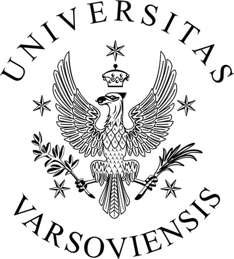
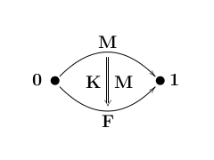

|  KATEDRA
METOD MATEMATYCZNYCH FIZYKI
 |
||||||||||||||||||||||||||||||||||||||||||||||||||||||||||||||||||||||||||||||||||||||||||
|
SEMINARIUM
TEORIA DWOISTO¦CI |
||||||||||||||||||||||||||||||||||||||||||||||||||||||||||||||||||||||||||||||||||||||||||
|
Czas i miejsce: czwartki, 10:15–12:00;
Sala 2.23 w g³ównym budynku Wydzia³u Fizyki UW przy
ul. Pasteura 5 (II piêtro), Warszawa
|
||||||||||||||||||||||||||||||||||||||||||||||||||||||||||||||||||||||||||||||||||||||||||
| |
||||||||||||||||||||||||||||||||||||||||||||||||||||||||||||||||||||||||||||||||||||||||||
ARCHIWUM 6. (rok akademicki 2018-19) ARCHIWUM
4. (rok akademicki 2016-17)
ARCHIWUM
3. (rok akademicki 2015-16)
ARCHIWUM 1.
(okres od 2. pa¼dziernika 2008 r. do 5. czerwca 2014
r.)
ARCHIWUM 0.
(okres od 7. listopada 1996 r. do 5. czerwca 2008 r.)
Strona
ostatnio od¶wie¿ana 10. maja 2018 r.
|
||||||||||||||||||||||||||||||||||||||||||||||||||||||||||||||||||||||||||||||||||||||||||
|---|---|---|---|---|---|---|---|---|---|---|---|---|---|---|---|---|---|---|---|---|---|---|---|---|---|---|---|---|---|---|---|---|---|---|---|---|---|---|---|---|---|---|---|---|---|---|---|---|---|---|---|---|---|---|---|---|---|---|---|---|---|---|---|---|---|---|---|---|---|---|---|---|---|---|---|---|---|---|---|---|---|---|---|---|---|---|---|---|---|---|